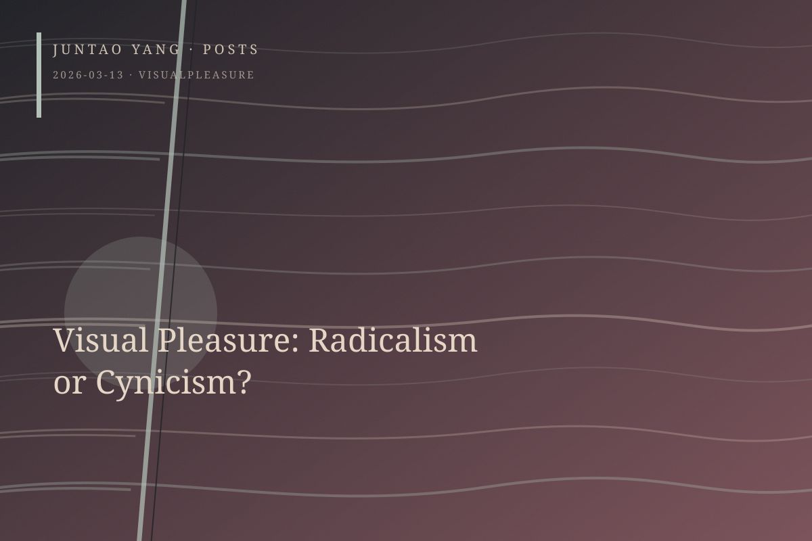

<content>
The new collection exhibition at Helsinki’s Kiasma Museum of Contemporary Art includes Dara Birnbaum’s Technology/Transformation: Wonder Woman (1978–79). In this reediting of the 1970s television series Wonder Woman, the secretary’s transformation into superhero is reduced, through a hip-hop-like rhythm of repetition and an almost hypnotic aesthetic, to a gaze intensified by desire. The work refuses simply to destroy pleasure. It samples, accelerates, loops, and overloads, allowing pleasure to expose its own mechanism from within.
Birnbaum’s work belongs to the visual rethinking set in motion by Laura Mulvey. Yet the gaudy, revealing, and sexualized instant of transformation also acquires a camp quality. An enterprising observer could easily construct a genealogy from this concentrated erotic moment to drag in contemporary queer and radical practice. Today’s identity politics is embedded in the contradictory and overlapping discourses of postfeminist struggle; its attitude toward such evident pleasure is no longer as resolute as it was in the 1970s.
The question concerns the ambiguous ethical status of visual pleasure, or sensuous enjoyment, today. Having moved from a tougher and rougher framework of struggle toward a gentler, more pervasive, sticky, and porous cultural sensibility, have we adopted a more thorough and decisive strategy of struggle, or merely a more convenient cynicism? Yet Trotsky also argued that art appeals to human feeling and imagination, and that its effects are therefore among the most vivid and decisive.
In the window of a secondhand shop on Kampinkuja, an illustrated volume by Michał Dutkiewicz displays naked women arranging their bodies in geometric poses, while the setting behind them openly appropriates Mondrian. Dutkiewicz lowers the pure formal order and spirituality to which abstraction laid claim to the level of visual pleasure, equating it with the erotic gaze. This provocative dragging-down of modernist art politics remains a shadow haunting every struggle for empowerment. If desire and pleasure are always rooted in an imbalance of power, how far must that dynamic be corrected before pleasure can be cautiously welcomed back? In truth, pleasure has never been separable from vulnerability.
Marianna Simnett’s 2025 work Leda Was a Swan addresses the ambiguity of visual pleasure directly, though at the cost of keeping its own position unresolved. Through artificial intelligence, the artist’s body and her painted arms, which figure the swan, are distorted and made fluid—note that word—as the image passes between ecstatic jouissance, which Roland Barthes distinguishes from steadier pleasure, and horror. The unity of woman with pleasure and desire is emphasized, yet the struggle and tearing internal to that monism still demand interpretation.
The question no longer concerns how agency might be claimed. The very distinction between perpetrator and victim has been suspended. By transforming rape into masturbation, Simnett seems to suggest that our real task is not to correct the dynamics of power but to discover a form of pleasure within which power relations themselves become indiscernible.
</content>
March 13, 2026
Visual Pleasure: Radicalism or Cynicism?
From Dara Birnbaum to Marianna Simnett, visual pleasure remains politically ambiguous whenever vulnerability, agency, and eroticized power cannot be disentangled.
